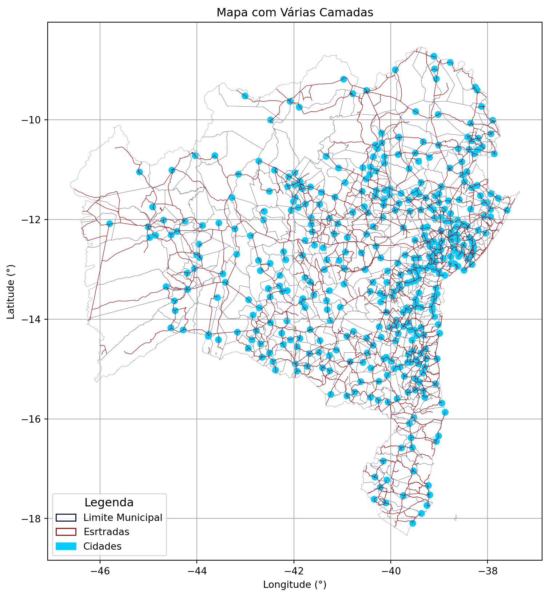

import geopandas as gpd
import matplotlib.pyplot as plt
# importações auxiliares
from IPython.display import display, Markdown
# Importação da configuração de legenda
import matplotlib.patches as patches
# Camadas carregadas
limite_municipio = gpd.read_file('./arquivos/municipios.json')
estradas = gpd.read_file('./arquivos/dados.gpkg', layer='estradas_ba')
cidades = gpd.read_file('./arquivos/dados.gpkg', layer='cidades')
# Definindo as cores
COR_EST_FACE = 'none'
COR_EST_EDGE = '#990000'
COR_CID_FACE = '#00ccff'
COR_CID_EDGE = '#00ccff'
COR_LIM_FACE = 'none'
COR_LIM_EDGE = '#000033'Criando Mapas com mais de uma camada
Muitas vezes necessitamos montar várias camadas com informações cartográficas em um mesmo mapa, por exemplo, limite municipal, cidades e estradas. A sequência de códigos mostrará como carregar as camadas, exibir na mesma figura e configurar a legenda.
Montando o Mapa
# Carregando os Mapas
# Criando a figure e o axes que receberão as feições
fig, ax_desenho = plt.subplots(figsize=(12,10))
# Adicionar o Limite Municipal no axes = ax_desenho
limite_municipio.plot(ax=ax_desenho, facecolor=COR_LIM_FACE, edgecolor=COR_LIM_EDGE,
linewidth = 0.12)
# Adicionar as Estradas no axes = ax_desenho
estradas.plot(ax=ax_desenho, facecolor=COR_EST_FACE, edgecolor=COR_EST_EDGE,
linewidth = 0.45)
# Adicionar as Cidades no axes = ax_desenho
cidades.plot(ax=ax_desenho, facecolor=COR_CID_FACE, edgecolor=COR_CID_EDGE)
# LEGENDAS
# lista de configurações
patch_list = []
# adicionando a camada municípios à legenda
patch_list.append(patches.Patch(facecolor=COR_LIM_FACE, edgecolor=COR_LIM_EDGE,
label='Limite Municipal'))
# adicionando a camada estradas à legenda
patch_list.append(patches.Patch(facecolor=COR_EST_FACE, edgecolor=COR_EST_EDGE,
label='Esrtradas'))
# adicionando a camada cidades à legenda
patch_list.append(patches.Patch(facecolor=COR_CID_FACE, edgecolor=COR_CID_EDGE,
label='Cidades'))
# Posicionando a legenda na figura através do ax_desenho.
ax_desenho.legend(handles=patch_list, fontsize=10, loc='lower right',
bbox_to_anchor = (0.25,0),title='Legenda', title_fontsize=12)
# Título da figura
plt.title('Mapa com Várias Camadas')
# Mostra as grades de coordenadas
plt.grid(visible=True)
# Colocar nomes nos eixos
plt.xlabel('Longitude (°)')
plt.ylabel('Latitude (°)')
# Mostra a figura
plt.show()
Cada camada adicionada ao mesmo Axes é sobreposta na figura. Veja que no código acima, todas os comandos .plot receberam o parâmetro ax=ax_desenho.